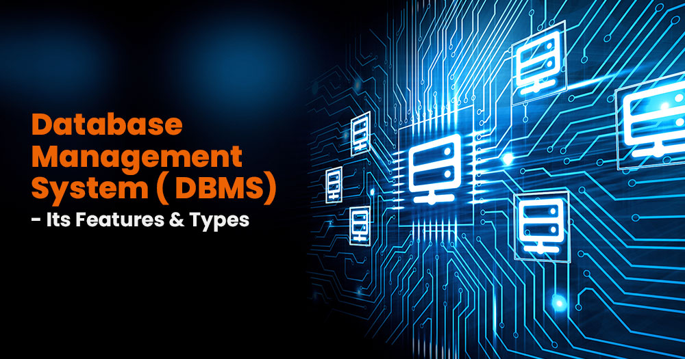
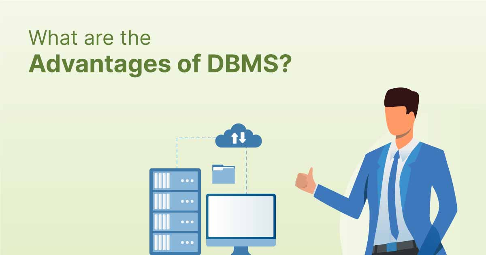
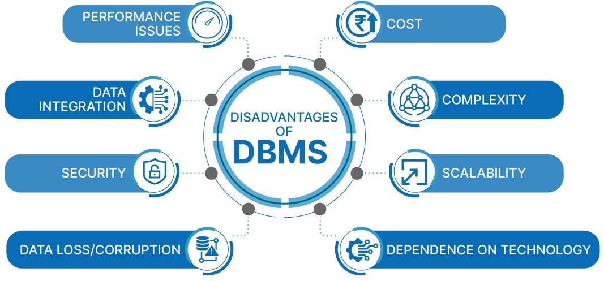
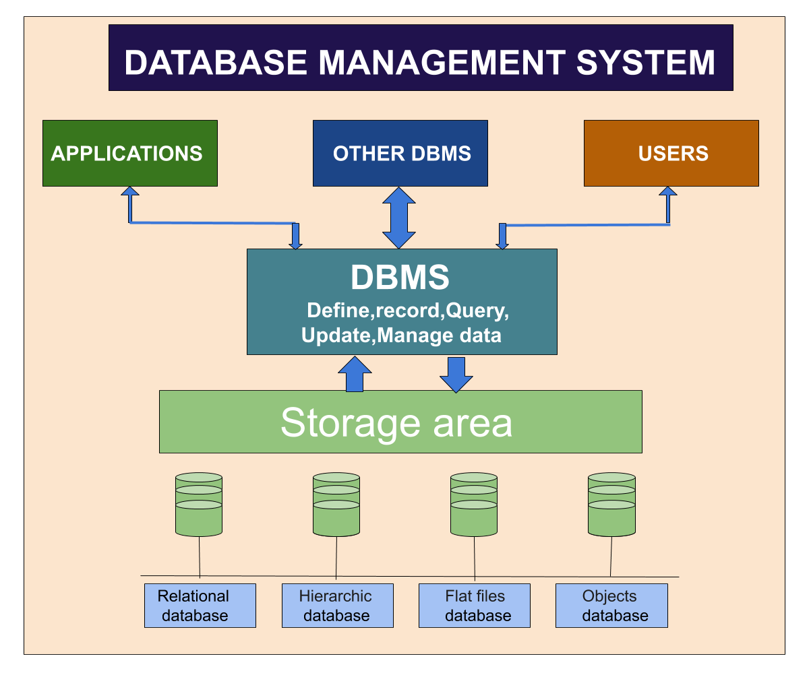

<div class="slideshow-container">

<div class="mySlides fade">
  <div class="numbertext">1 / 3</div>
  
  <div class="text">one</div>
</div>

<div class="mySlides fade">
  <div class="numbertext">2 /  3</div>
  
  <div class="text"> Two</div>
</div>

<div class="mySlides fade">
  <div class="numbertext">3 / 3</div>
  
  <div class="text"> Three</div>
</div>


</div>
<br>

<div style="text-align:center">
  <span class="dot"></span> 
  <span class="dot"></span> 
  <span class="dot"></span>
   
</div>

<script>
let slideIndex = 0;
showSlides();

function showSlides() {
  let i;
  let slides = document.getElementsByClassName("mySlides");
  let dots = document.getElementsByClassName("dot");
  for (i = 0; i < slides.length; i++) {
    slides[i].style.display = "none";  
  }
  slideIndex++;
  if (slideIndex > slides.length) {slideIndex = 1}    
  for (i = 0; i < dots.length; i++) {
    dots[i].className = dots[i].className.replace(" active", "");
  }
  slides[slideIndex-1].style.display = "block";  
  dots[slideIndex-1].className += " active";
  setTimeout(showSlides, 2000); // Change image every 2 seconds
}
</script>

</body>
</html> 


<!DOCTYPE html>
<!-- saved from url=(0034)https://learndbms.netlify.app/dbms -->
<html lang="en"><head><meta http-equiv="Content-Type" content="text/html; charset=UTF-8">
    
    <meta name="viewport" content="width=device-width, initial-scale=1.0">
    <title>Document</title>
</head>
<body>
    
         &gt;
</p>
        </p><h1>Introduction of DBMS (Database Management System)</h1><br>
A Database Management System (DBMS) is a software system that is designed to manage and organize data in a structured manner. It allows users to create, modify, and query a database, as well as manage the security and access controls for that database.

DBMS provides an environment to store and retrieve the data in coinvent and efficient manner.

<h1>Key Features of DBMS</h1>
Data modeling: A DBMS provides tools for creating and modifying data models, which define the structure and relationships of the data in a database.
Data storage and retrieval: A DBMS is responsible for storing and retrieving data from the database, and can provide various methods for searching and querying the data.
Concurrency control: A DBMS provides mechanisms for controlling concurrent access to the database, to ensure that multiple users can access the data without conflicting with each other.
Data integrity and security: A DBMS provides tools for enforcing data integrity and security constraints, such as constraints on the values of data and access controls that restrict who can access the data.
Backup and recovery: A DBMS provides mechanisms for backing up and recovering the data in the event of a system failure.
DBMS can be classified into two types: Relational Database Management System (RDBMS) and Non-Relational Database Management System (NoSQL or Non-SQL)
RDBMS: Data is organized in the form of tables and each table has a set of rows and columns. The data are related to each other through primary and foreign keys.
NoSQL: Data is organized in the form of key-value pairs, documents, graphs, or column-based. These are designed to handle large-scale, high-performance scenarios.
A database is a collection of interrelated data which helps in the efficient retrieval, insertion, and deletion of data from the database and organizes the data in the form of tables, views, schemas, reports, etc. For Example, a university database organizes the data about students, faculty, admin staff, etc. which helps in the efficient retrieval, insertion, and deletion of data from it.

<h1>Database Languages</h1>
Data Definition Language
Data Manipulation Language
Data Control Language
Transactional Control Language
Data Definition Language
DDL is the short name for Data Definition Language, which deals with database schemas and descriptions, of how the data should reside in the database.<br>

CREATE: to create a database and its objects like (table, index, views, store procedure, function, and triggers)
ALTER: alters the structure of the existing database
DROP: delete objects from the database
TRUNCATE: remove all records from a table, including all spaces allocated for the records are removed
COMMENT: add comments to the data dictionary
RENAME: rename an object
Data Manipulation Language
DML is the short name for Data Manipulation Language which deals with data manipulation and includes most common SQL statements such SELECT, INSERT, UPDATE, DELETE, etc., and it is used to store, modify, retrieve, delete and update data in a database.<br>

SELECT: retrieve data from a database
INSERT: insert data into a table
UPDATE: updates existing data within a table
DELETE: Delete all records from a database table
MERGE: UPSERT operation (insert or update)
CALL: call a PL/SQL or Java subprogram
EXPLAIN PLAN: interpretation of the data access path
LOCK TABLE: concurrency Control
Data Control Language
DCL is short for Data Control Language which acts as an access specifier to the database.(basically to grant and revoke permissions to users in the database<br>

GRANT: grant permissions to the user for running DML(SELECT, INSERT, DELETE,…) commands on the table
REVOKE: revoke permissions to the user for running DML(SELECT, INSERT, DELETE,…) command on the specified table
Transactional Control Language
TCL is short for Transactional Control Language which acts as an manager for all types of transactional data and all transactions. Some of the command of TCL are<br>

Roll Back: Used to cancel  or Undo changes made in the database 
Commit: It is used to apply or save changes in the database
Save Point: It is used to save the data on the temporary basis in the database
Data retrieval language:
DRL is short for Data Retrieval Language which is used for retrieval of data. It can also be said as DML.<br>

SELECT: Used for extracting the required data.
Database Management System
The software which is used to manage databases is called Database Management System (DBMS). For Example, MySQL, Oracle, etc. are popular commercial DBMS used in different applications. DBMS allows users the following tasks:<br> 

Data Definition: It helps in the creation, modification, and removal of definitions that define the organization of data in the database.<br> 
Data Updation: It helps in the insertion, modification, and deletion of the actual data in the database. 
Data Retrieval: It helps in the retrieval of data from the database which can be used by applications for various purposes. <br>
User Administration: It helps in registering and monitoring users, enforcing data security, monitoring performance, maintaining data integrity, dealing with concurrency control, and recovering information corrupted by unexpected failure.
<h1>Applications of DBMS:</h1>
Enterprise Information: Sales, accounting, human resources, Manufacturing, online retailers.
Banking and Finance Sector: Banks maintaining the customer details, accounts, loans, banking transactions, credit card transactions. Finance: Storing the information about sales and holdings, purchasing of financial stocks and bonds.
University: Maintaining the information about student course enrolled information, student grades, staff roles.
Airlines: Reservations and schedules.
Telecommunications: Prepaid, postpaid bills maintance.
Paradigm Shift from File System to DBMS
 File System manages data using files on a hard disk. Users are allowed to create, delete, and update the files according to their requirements. Let us consider the example of file-based University Management System. Data of students is available to their respective Departments, Academics Section, Result Section, Accounts Section, Hostel Office, etc. Some of the data is common for all sections like Roll No, Name, Father Name, Address, and Phone number of students but some data is available to a particular section only like Hostel allotment number which is a part of the hostel office. Let us discuss the issues with this system:

Redundancy of data: Data is said to be redundant if the same data is copied at many places. If a student wants to change their Phone number, he or she has to get it updated in various sections. Similarly, old records must be deleted from all sections representing that student.
Inconsistency of Data: Data is said to be inconsistent if multiple copies of the same data do not match each other. If the Phone number is different in Accounts Section and Academics Section, it will be inconsistent. Inconsistency may be because of typing errors or not updating all copies of the same data.
Difficult Data Access: A user should know the exact location of the file to access data, so the process is very cumbersome and tedious. If the user wants to search the student hostel allotment number of a student from 10000 unsorted students’ records, how difficult it can be.
Unauthorized Access: File Systems may lead to unauthorized access to data. If a student gets access to a file having his marks, he can change it in an unauthorized way.
No Concurrent Access: The access of the same data by multiple users at the same time is known as concurrency. The file system does not allow concurrency as data can be accessed by only one user at a time.
No Backup and Recovery: The file system does not incorporate any backup and recovery of data if a file is lost or corrupted.
<h1>Advantages of DBMS</h1>
Data organization: A DBMS allows for the organization and storage of data in a structured manner, making it easy to retrieve and query the data as needed.
Data integrity: A DBMS provides mechanisms for enforcing data integrity constraints, such as constraints on the values of data and access controls that restrict who can access the data.
Concurrent access: A DBMS provides mechanisms for controlling concurrent access to the database, to ensure that multiple users can access the data without conflicting with each other.
Data security: A DBMS provides tools for managing the security of the data, such as controlling access to the data and encrypting sensitive data.
Backup and recovery: A DBMS provides mechanisms for backing up and recovering the data in the event of a system failure.
Data sharing: A DBMS allows multiple users to access and share the same data, which can be useful in a collaborative work environment.
<h1>Disadvantages of DBMS</h1>
Complexity: DBMS can be complex to set up and maintain, requiring specialized knowledge and skills.
Performance overhead: The use of a DBMS can add overhead to the performance of an application, especially in cases where high levels of concurrency are required.
Scalability: The use of a DBMS can limit the scalability of an application, since it requires the use of locking and other synchronization mechanisms to ensure data consistency.
Cost: The cost of purchasing, maintaining and upgrading a DBMS can be high, especially for large or complex systems.
Limited Use Cases: Not all use cases are suitable for a DBMS, some solutions don’t need high reliability, consistency or security and may be better served by other types of data storage.
These are the main reasons which made a shift from file system to DBMS. Also, see

A Database Management System (DBMS) is a software system that allows users to create, maintain, and manage databases. It is a collection of programs that enables users to access and manipulate data in a database. A DBMS is used to store, retrieve, and manipulate data in a way that provides security, privacy, and reliability.

<h1>Several Types of DBMS</h1>
Relational DBMS (RDBMS): An RDBMS stores data in tables with rows and columns, and uses SQL (Structured Query Language) to manipulate the data.
Object-Oriented DBMS (OODBMS): An OODBMS stores data as objects, which can be manipulated using object-oriented programming languages.
NoSQL DBMS: A NoSQL DBMS stores data in non-relational data structures, such as key-value pairs, document-based models, or graph models.<br>
<h1>DBMS Architecture 1-level, 2-Level, 3-Level</h1>
A Database stores a lot of critical information to access data quickly and securely. Hence it is important to select the correct architecture for efficient data management. DBMS Architecture helps users to get their requests done while connecting to the database. We choose database architecture depending on several factors like the size of the database, number of users, and relationships between the users. There are two types of database models that we generally use, logical model and physical model. Several types of architecture are there in the database which we will deal with in the next section.

<h1>Types of DBMS Architecture</h1>
There are several types of DBMS Architecture that we use according to the usage requirements. Types of DBMS Architecture are discussed here.

1-Tier Architecture
2-Tier Architecture
3-Tier Architecture
<h1>1-Tier Architecture</h1>
In 1-Tier Architecture the database is directly available to the user, the user can directly sit on the DBMS and use it that is, the client, server, and Database are all present on the same machine. For Example: to learn SQL we set up an SQL server and the database on the local system. This enables us to directly interact with the relational database and execute operations. The industry won’t use this architecture they logically go for 2-tier and 3-tier Architecture.

DBMS 1-Tier Architecture
DBMS 1-Tier Architecture

<h1>Advantages of 1-Tier Architecture</h1>
Below mentioned are the advantages of 1-Tier Architecture.

Simple Architecture: 1-Tier Architecture is the most simple architecture to set up, as only a single machine is required to maintain it.
Cost-Effective: No additional hardware is required for implementing 1-Tier Architecture, which makes it cost-effective.
Easy to Implement: 1-Tier Architecture can be easily deployed, and hence it is mostly used in small projects. 
<h1>2-Tier Architecture</h1>
The 2-tier architecture is similar to a basic client-server model. The application at the client end directly communicates with the database on the server side. APIs like ODBC and JDBC are used for this interaction. The server side is responsible for providing query processing and transaction management functionalities. On the client side, the user interfaces and application programs are run. The application on the client side establishes a connection with the server side to communicate with the DBMS. 
An advantage of this type is that maintenance and understanding are easier, and compatible with existing systems. However, this model gives poor performance when there are a large number of users. 

DBMS 2-Tier Architecture
DBMS 2-Tier Architecture

<h1>Advantages of 2-Tier Architecture</h1>
Easy to Access: 2-Tier Architecture makes easy access to the database, which makes fast retrieval.
Scalable: We can scale the database easily, by adding clients or upgrading hardware.
Low Cost: 2-Tier Architecture is cheaper than 3-Tier Architecture and Multi-Tier Architecture.
Easy Deployment: 2-Tier Architecture is easier to deploy than 3-Tier Architecture.
Simple: 2-Tier Architecture is easily understandable as well as simple because of only two components.
<h1>3-Tier Architecture</h1>
In 3-Tier Architecture, there is another layer between the client and the server. The client does not directly communicate with the server. Instead, it interacts with an application server which further communicates with the database system and then the query processing and transaction management takes place. This intermediate layer acts as a medium for the exchange of partially processed data between the server and the client. This type of architecture is used in the case of large web applications. 

DBMS 3-Tier Architecture
DBMS 3-Tier Architecture

<h1>Advantages of 3-Tier Architecture</h1>
Enhanced scalability: Scalability is enhanced due to the distributed deployment of application servers. Now, individual connections need not be made between the client and server.
Data Integrity: 3-Tier Architecture maintains Data Integrity. Since there is a middle layer between the client and the server, data corruption can be avoided/removed.
Security: 3-Tier Architecture Improves Security. This type of model prevents direct interaction of the client with the server thereby reducing access to unauthorized data.
Disadvantages of 3-Tier Architecture
More Complex: 3-Tier Architecture is more complex in comparison to 2-Tier Architecture. Communication Points are also doubled in 3-Tier Architecture.
Difficult to Interact: It becomes difficult for this sort of interaction to take place due to the presence of middle layers.
    <p></p>

</body></html>